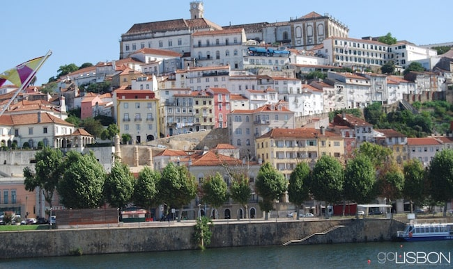

Day 4: Up Next, Coimbra (F:5/24)
This city was once the medieval capital of Portugal and is pronounced "queembra". It is also home to the Universidade Velha (Old University) but also referred to as Coimbra University. This university houses an 18th Century clock and bell tower along with one of the world's most beautiful libraries, the Biblioteca Joanina. There is also supposedly the preserved head of serial killer Diogo Alves in a jar here.